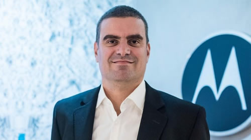

Real Chubut - Agencia de Noticias


Greco, de Motorola: "En 2018 el mercado de telefonía celular llegó a su piso"

El gerente general de la compañía habló con ámbito.com sobre el presente del sector y las perspectivas de la marca para 2019. El año pasado se vendieron casi 30% menos de celulares, pero Motorola creció un 60%.
El 2018 fue un año difícil para la industria de la telefonía celular. Con una caída de ventas de tres millones de equipos (bajó casi 30% con respecto a 2017), no fue ajena a la depresión generalizada del consumo.
Pese a ese achicamiento, la marca Motorola pasó de vender 1,2 millones de teléfonos en 2017 a 2,1 millones el año pasado. Así tuvo un crecimiento de 60% y anudó su segundo año consecutivo de crecimiento a doble dígito.
En el marco del lanzamiento de la nueva generación de la familia Moto G, producto estrella de la marca Motorola, el gerente general de la empresa, Germán Greco, habló con ámbito.com sobre el presente del mercado de telefonía celular en la Argentina.
Para Greco, los 8 millones de celulares vendidos en 2018 por todas las marcas es un piso para la industria y pronosticó que este año será similar al que pasó.
Periodista: ¿Cómo está el mercado de celulares en Argentina?
Germán Greco: En 2017 se habían vendido 11 millones de equipos y en 2018 cayó a 8 millones. Lo que pasó fue que el mercado se achicó un 26%, pero mientras todos nuestros competidores se achicaron entre un 30% y un 60%, nosotros crecimos casi un 57%. En cuanto a share de mercado estamos segundos con un 26% del total de 2018, que es 13 puntos más que en 2017. En el último trimestre cerramos 46% contra 36% del primero. Un dato interesante es que desde 2012 a hoy, la línea Moto G es la más buscada en Google de todos los teléfonos. Se sabe que es un producto bueno, a buen precio, y por eso los consumidores nos buscan.
P.: ¿Y a nivel de producción?
G.G.: Por una cuestión impositiva conviene producir acá en lugar de importar. Además, hay que recordar que la apertura del mercado para importación fue de hace dos años para acá. Con el dólar bajo, al comienzo te convenía importar algo, pero casi todo se producía en Tierra del Fuego.
P.: ¿Cómo los afecta el contrabando de celulares?
G.G.: El 2017 fue un año de casi 11 millones de teléfonos y hubo 3 millones de teléfonos "grises", que son productos que llegan desde el Caribe, Dubai, de contrabando. Eso venía bajando. Cuando en 2017 el Gobierno saca los impuestos internos, lo primero que yo hago es bajar los precios entre un 7 y un 10%. Ahí achicamos la diferencia de precios con el equipo ilegal. Y además hubo una primera suba del dólar, y como hay recupero de IVA en la producción de Tierra del Fuego, eso nos vuelve en mejores costos. Eso lo pudimos trasladar positivamente a precios. Antes que eso era más barato comprar en Chile o en Brasil. Desde entonces hasta acá, es mucho más barato en dólares comprar en Argentina, incluso con el dólar a $ 40. Es un 10 o 15% más barato acá que en Chile o en Brasil. Y con eso atacamos el mercado "gris" que se redujo un millón de equipos en 2018. El año pasado fueron 8 millones de equipos que salieron desde la isla, o sea que se achicó el negocio un 27%. El mercado "gris" tiene que ver con cosas que se están trabajando a nivel aduana, impuestos. Esos equipos no pagan impuestos y tienen un montón de problemas, no tienen garantía y a veces funcionan en bandas que ni siquiera operan acá. Yo compite con lo que puedo, que es precio. Yo pago impuestos, y quienes nos compran también pagan impuestos.
P.: ¿Cómo hicieron para bajar los precios en un país donde todo aumenta?
G.G.: Todo empieza en 2017 cuando comenzamos a pasar todos los beneficios de producir acá, del dólar, de los impuestos, a precios. Y trayendo cada vez mejor tecnología a precios más accesibles. El secreto es tener productos a precio exacto. Que el consumidor perciba que el precio es lo que el producto vale. Si querés vender un producto más caro de lo que vale, vas a vender menos. Basados en ese concepto, hemos mejorado mucho los procesos productivos, los costos, y eso lo llevamos a precios. Y todo empieza porque el producto está bueno; si el producto fuese malo todo eso no sirve. En la relación precio-calidad de nuestros productos los consumidores están pagando menos de lo que sale nuestra competencia. Además, en la segunda mitad del año pasado fuimos los que más inversión de marca hicimos de toda la industria. Cuando el dólar se disparó, nosotros teníamos una estrategia sólida, tuvimos el respaldo de la dirección global, por lo que decidimos seguir adelante, cuando otros dejaron de invertir. Nos adaptamos más rápido que la competencia, y lejos de dejar de producir seguimos produciendo lo que habíamos planeado para el año. Se achicó mucho la "torta" en la segunda mitad del año, pero nosotros vendimos lo mismo.
P.: ¿Cómo se compite en el mercado de telefonía celular?
G.G: Con innovación y marca. Hoy en Argentina el ticket promedio está entre $ 10.000 y $ 12.000, cuando antes de la devaluación estaba entre $ 8.000 y $ 9.000. Sin embargo, mientras el dólar, que tiene una gran injerencia en el precio, se devaluó 100%, nuestros productos aumentaron un 60%. El 40% que no subió es optimización de la producción, parte del recupero del IVA que tenés por producir en Tierra del Fuego, y además fuimos más agresivos en precios que la competencia.
P.: ¿Es cara la tecnología en Argentina?
G.G.: En nuestro caso bajamos los precios. En dólares, seguramente el Moto G es más barato el de ahora que el de antes. Lo que pasa es que el dólar antes estaba a $ 5 y hoy está a $ 40. Por eso hoy si tenés u$s 100 es más barato comprar un producto en Argentina que en Chile o Brasil. Esto quiere decir que hay margen para bajar los precios, pero hay que entender bien cómo funciona el sistema productivo. Tenés que saber cómo hacerlo, pero si lo hacés bien da buenos resultados. Hay margen para bajar los precios en tecnología, pero cada sector es diferente. El modelo en Tierra del Fuego está bien, por lo que vamos a seguir produciendo acá.
P.: ¿Que tanto afectó al mercado que se hayan terminado las cuotas sin interés?
G.G.: En la segunda mitad del año pasado, como la tasa subió tanto, prácticamente dejó de haber financiación. Pero la industria nuestra tiene algo interesante que es que las operadoras sí venden en cuotas sin interés contra factura, por lo que no hay un banco o una tarjeta atrás del interés. En el retail puro sí y ahí tenés que pagar las cuotas con interés. El de vender a través de operadoras es un servicio que está funcionando bien.
P.: ¿Cómo ve el presente de las telecomunicaciones en el país?
G.G.: Ha mejorado mucho la prestación del servicio de telefonía celular. Los operadores han invertido mucho pero todavía falta. Todavía falta pasar mucha gente de 2G a 3G y de 3G a 4G. Cuando van escalando se descomprimen las redes. El secreto es migrar más gente a 4G y eventualmente vas a tener mejor cobertura y más velocidad de datos. La conectividad es inversión. Para 5G acá todavía falta. Recién ahora está llegando a EEUU. Y todavía falta migrar mucha gente a 4G.
P.: ¿Cuáles son sus pronósticos para 2019?
G.G.: Creemos que este año va a ser parecido al que pasó. Esperamos que el mercado de celulares venda lo mismo que 2018, con una primera mitad más dura que la segunda. Nosotros vamos a seguir haciendo lo que estamos haciendo, innovando y sacando productos, y ayudando al consumidor a seguir accediendo a mejor tecnología a un mejor precio. Un año flat contra el anterior es algo normal. Porque 2018 diría que fue como un piso del sector. También hay que tener en cuenta que es un año electoral y puede pasar cualquier cosa. Normalmente, los años electorales suelen ser buenos.
P.: ¿Cómo les va a impactar el precio del dólar?
G.G.: En algunos aspectos es un país raro. Por un lado explotó el dólar y subieron las tasas. Ahora bajan las tasas y el dólar no baja. Esperamos que la tasa siga bajando, y puede ser que el dólar suba un poco. Hacemos un pronóstico a fin de año de $ 45 por dólar, que eso va a mantener a la Argentina competitiva en términos de exportación. Los precios se moverán con esa tendencia. Y como nosotros tenemos los beneficios de producir localmente, nuestros precios no necesariamente van a subir igual que el dólar. La intención es que sea por debajo.
P.: ¿Qué significa para Motorola este lanzamiento?
G.G.: Hoy lanzamos la séptima generación de la familia de Moto G, que es la más exitosa en la historia de la marca. Ya se vendieron 86 millones de teléfonos desde 2012. En este lanzamiento presentamos 4 modelos en una gama en la que somos líderes, tenemos un 36% del mercado. Venimos a desembarcar con más innovación, con productos con características de gama más bien alta, aunque precios de gama media. Es nuestra franquicia estrella y pretendemos seguir liderando. Y un dato no menor es que salimos solo 11 días después que el lanzamiento global. Gracias a nuestro proceso de producción ya desde hoy estamos en todos los canales de distribución cuando antes tardábamos un mes.
P.: ¿Qué trae de nuevo la nueva generación de Moto G?
G.G.: Este es el segmento donde hay más competencia, con más innovación y precios. Abajo de los $ 20.000 no hay tanta innovación y nosotros sí lo estamos haciendo, con más memoria y pantallas más grandes. Es muy alta la cantidad de gente que compró un producto de la familia Moto G y que vuelve a comprarlo. De las seis generaciones que teníamos hasta ahora tenemos quienes compraron 4 o 5 modelos.
P.: ¿Cuál es el ritmo de recambio de equipo en el país?
G.G.: Está más o menos en un año y unos meses. Porque la tecnología te va dejando atrás. Cámaras mejores, mejores procesadores, y demás avances, hace que al consumidor le den ganas de ir renovándose.
P.: ¿En qué se fija el consumidor para elegir un teléfono?
G.G.: Cuando uno hace el research lo que se prioriza es la cámara, la pantalla, la batería. Después viene el sistema operativo, y luego otro tipo de cosas que van cambiando. Por ejemplo en algún momento se buscaban teléfonos que sean sumergibles, que ahora no se buscan más. Lo que sí buscan, que es una variable que cruza a todos, es el diseño. Porque el teléfono sirve ya casi como una cuestión de status. Si todo eso es bueno, pero el diseño no lo es, el equipo se queda atrás. Los nuestros son muy lindos, son más robustos que la media. Nos ocupamos de que todo el proceso productivo sea de la mejor calidad del mercado, con un diseño innovador, con características de punta de gama. Todo eso hace que el paquete sea muy bueno.
P.: ¿Hubo cambios en esas preferencias?
G.G.: Nos dimos cuenta que el consumidor empezó a ir a lo básico de vuelta. Que le dure la batería por ejemplo. En un momento fue tal la explosión de innovación que no importaba si te duraba la batería sino las cosas que podías hacer. Pero si se te acaba la batería no podés ni hablar. Por eso es que volvimos a las bases y a darle al consumidor lo que quiere: algo robusto, sustentable, que tenga buena performance, que permita hacer muy bien todo lo que hacés diariamente. Ese fue el gran giro de la empresa. De hecho, todos nuestros Moto G, con un uso normal, tienen por lo menos un día de batería. Lo mismo pasa con la memoria interna.
P.: ¿Es un problema la inseguridad?
G.G.: No creo que sea un problema, aunque sabemos que hay muchos robos. Ahora se lanzó la plataforma para que si te roban o perdés el celular llamás y lo ponen en una lista negra y ya no se puede utilizar más. Y eso lo que generó es que haya un poco menos de robos porque ya no funciona más. Además nuestros equipos son un poco más seguros que la media del mercado, entonces te garantizás que no se puede crackear o es más difícil hacerlo, lo que hace que se vean como productos de mayor duración.
P.: ¿Cómo está la marca Motorola?
G.G.: Está muy rejuvenecida. Fuimos líderes durante muchísimos años. Luego de un cambio de la tecnología nos quedamos un poco atrás, y ahora desde que entró Google en 2012 y con Lenovo en 2015 nos refundamos, nos convertimos prácticamente en una startup, y ahora somos una empresa con foco en la innovación. El ADN es ese. Y centrados en el consumidor. Antes en el inicio de la tecnología celular, desarrollabas algo muy novedoso y tratabas de imponerlo diciendo "esto es lo que viene". Pero a veces la distancia entre la tecnología y el consumidor era tan grande que las personas no terminaban consumiendo lo que la tecnología traía. El secreto es que desde 2013 trajimos tecnología más sencilla, para que el consumidor pueda acceder fácil y rápido, y no algo que parezca futurista, porque no lo paga, no lo vale.
P.: ¿Cómo esperan que sea este año para Motorola?
G.G.: Siempre tenés miles de preguntas. El consumidor va a estar, no va a estar. Bueno, creo que la industria celular fue una de las menos impactadas el año pasado. También porque ya se convirtió en un producto de consumo diario. Y además hay recambio tecnológico. Hay un mercado piso de 8 millones de teléfonos. En ese piso nosotros tomamos todo el market share que pudimos. Pero no es que ese sea nuestro objetivo; nuestro objetivo es ser una empresa rentable como piden los accionistas. Terminamos diciembre con 36% de mercado, en el de Argentina es nuestro market share más alto del mundo. En Latinoamérica tenemos el 18%, somos el número 2. En Argentina también somos el número 2, pero achicamos la distancia con el primero. En cada segmento tenemos entre un 20 y un 30% de mercado. La estrategia es constantemente buscar innovación, buenos precios, y marca muy presente.
P.: Es optimista...
G.G.: La vengo surfeando hace 15 años en esta industria y en la Argentina uno tiene que estar preparado para adaptarse rápido a los cambios. Si estás bien adaptado, sacás ventaja y ganás mercado. En la Argentina Motorola es muy fuerte. Es una marca histórica. Habernos renovado y haber invertido, rápidamente nos posicionó muy bien.
Fuente: Ambito